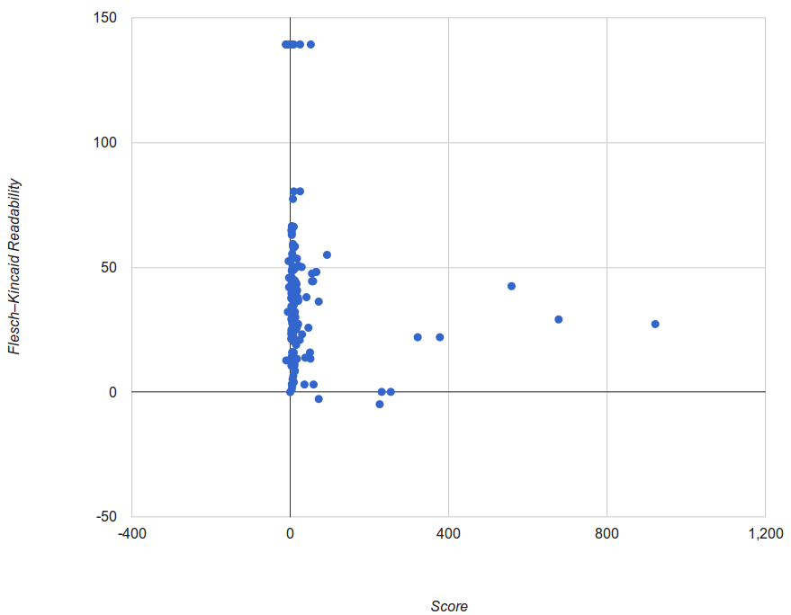
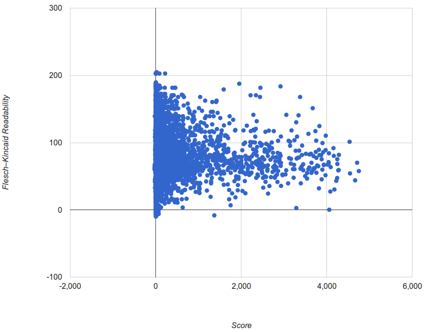
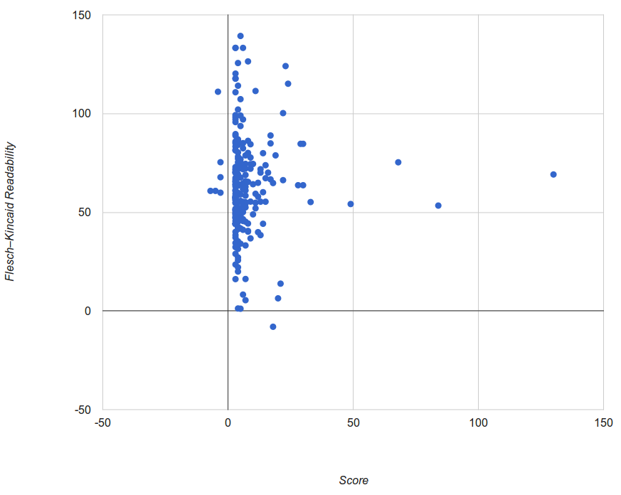

The project was started for my university module, Data Information Retrieval, and was inspired by many posts at /r/dataisbeatiful. The idea of the project is to try and find out if there is a correlation between a reddit comment's readability and it's score.
The data is gathered by a python script using the python reddit api wrapper. It gather's all of the comments from a subreddit's top post for that day, expands every comment, and saves them to a text file that includes the comment id, body, and score. It normally takes around two hours to collect all of the data due to reddit api rate limiting. Another script then goes through this stored data and analyses it by sending the comment body through a Flesch-Kincaid readability function. I chose the Flesch-Kincaid readability test because it is a well established metric for readability estimates and the fact that it relies upon word length and sentence length rather than a word recognition processing makes it simple to implement, inexpensive and suitable for reddit. The source code is avaliable here.
Over all the data has no strong correlation. However some points do stand out, high scoring (over 1000 points) comments very rarely have a negative readability, meaning that they are almost always comprehendable. High scoring comments tended towards having their readability fall around 60 meaning that it is easily understood by a high school child. Conversly low scoring comments fell accross the entire range of readability scores suggesting everything from eloquently written prose to simple statements to complete meaningless drivel.
 The interesting data points appear when subreddits are shown individually for example /r/askscience is a heavily moderated subreddit dedicated to scientific responses, and therefore would be expected to have a higher average reading level and therefore more comments with a lower readability score. In retrospect /r/askhistorians may have been a better subreddit to sample. This is reflected in the graph shown, with many comments around 250 points whilst having a readability score of 0 or lower. For comparison Green Eggs and Ham by Dr. Seuss had a readability of -1.3. After the data was tracked back to the original three comments one was a duplicate of the same comment, unfortunately a link dump, which explains it's low readability. The other however was a well written comment about why the anti-vaxxing movement is causing a resurgence in measles. although after running it through both my test and a third party flesch calculator it appeared to have a higher readability score of 39.2. This is mainly due to the fact that the reddit api gives the comment body complete with reddit markup, meaning that it contains rogue characters and url's resulting in a less readable form.
 /r/askreddit was another subreddit that was analysed. With it being a subreddit dedicated to longer stories it was more likely to have longer responses and therefore better samples, and whilst it didn't have the biase towards more wordy scientific answers that /r/askscience has, it was assumed that a better written comment would garner more upvotes.
The table mainly shows one result. /r/askreddit gets a lot of comments. It does however show that most of the highest scoring comments have a score between 40 and 80 with only a few outliers being around 0, and again those low scoring results had links. Following the highest voted comment (4752 votes) resulted in a short comment about a highly opinionated comment from the thread "which company is genuinely evil". The comment with the highest readability and a score over 1000 was also analysed, it consisted of "seen 8:53 PM". Maybe reddit doesn't enjoy well written posts. Other highly rated posts included "Your kid is doing fine without you."(4536 points), "My address. My parents are psychotic." (3979 points) and "That I like Vicki and she likes me back,and she showed me her boobies and I like them too." (4159 points)
Further analysis showed that most of the highest rated comments in /r/askreddit were similar to this with the longest ones being no more than two paragraphs.
 A subreddit that seemed likely to yeild interesting results was /r/writingprompts. This is mainly because the subreddit it focused around writing, but also because the resulting comments are upvoted depending upon how well written they are. Interestingly there seemed to be no comments with 0 score suggesting a very active, well moderated community. As far as readability was concerned, most of the highly voted comments scored around between 50 and 70 on the Flesch readability score and, upon being tracked down, were all first level comments that were upvoted as a response to the post.
There is little to no correlation between readability and score, even on subreddits where comments are generally more highly thought of if they are written gooder. This data does show that reddit has an average readability, most likely due to the casual nature of the comment section on most sub, although the average readability can drop on more scientific subreddits, such as /r/askscience, where comments are expected to be more technical and use jargon. Also this has a readability of 52.
The main problem with the ranking is that the Flesch-Kincaid score doesn't reflect how interesting the actual text is, nor is it truly a ranking for reading level because it doesn't take into account how difficult each word is. For example, most people will know what an elephant is despite it having a reading score of -48 yet a word like madid scores a much higher 36.6, despite being far less common, and that's ignoring the slang that is used on reddit.
Another flaw with the project was that hyperlink text is included. This means that long incomprehensible strings are parsed through the test resulting in some comments, such as link dumps, getting a far lower score than theytruly should. This could be mitigated by using another parsing method, possibly a regex to remove web links
Edit Central (June 2012) [online] http://www.editcentral.com/gwt1/EditCentral.html (accessed 19/3/2015)
Readability Formulas (n.d) [online] http://www.readabilityformulas.com/flesch-reading-ease-readability-formula.php (accessed 19/3/2015)
Count Words Worth (n.d) [online] http://countwordsworth.com/statistics/fleschkincaid (accessed 19/3/2015)